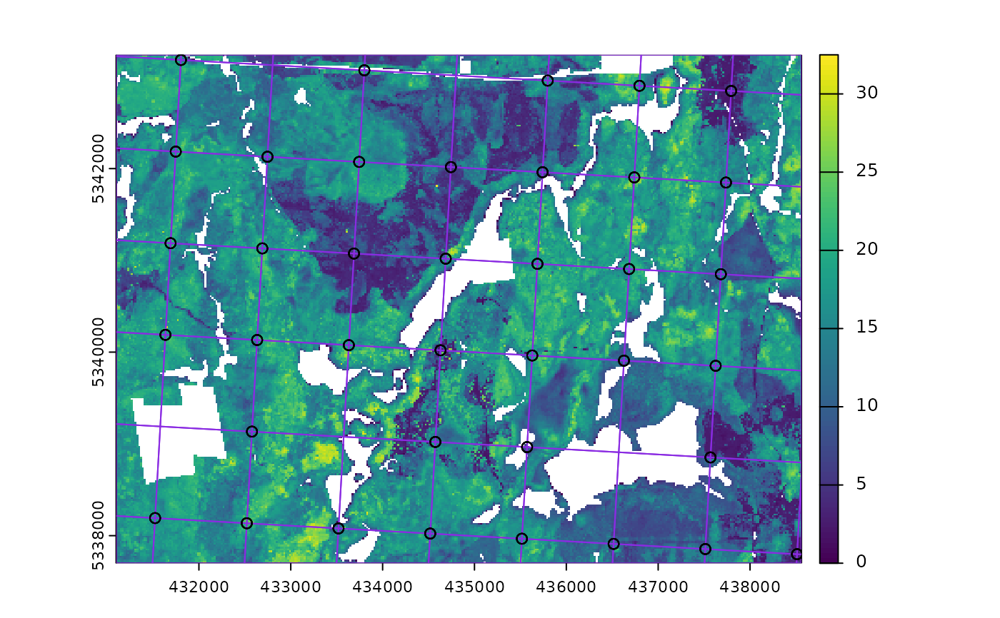

Systematic sampling within a square or hexagonal tessellation.
sample_systematic(
raster,
cellsize,
square = TRUE,
location = "centers",
force = FALSE,
access = NULL,
buff_inner = NULL,
buff_outer = NULL,
plot = FALSE,
filename = NULL,
overwrite = FALSE,
details = FALSE,
...
)spatRaster. Raster used to define extent of fishnet grid.
Numeric. Desired cellsize for tessellation.
Logical. Tessellation shape. Default is regular square grid,
if FALSE hexagons are used.
Character. Sample location within tessellation. Default = "centers")
returns samples at tessellation centers, "corners" - corners of tessellation are returned,
"random" - samples are randomly located within tessellations.
Logical. Only applies when location = "random". If TRUE, random samples are
forced to fall in areas where raster does not have NA values. This will considerably slow processing.
sf. Road access network - must be lines.
Numeric. Inner buffer boundary specifying distance from access where plots cannot be sampled.
Numeric. Outer buffer boundary specifying distance from access where plots can be sampled.
Logical. Plots output strata raster with samples.
Character. Path to write output samples.
Logical. Choice to overwrite existing filename if it exists.
Logical. If FALSE (default) output is sf object of
systematic samples. If TRUE returns a list of sf objects where tessellation
is the tessellation grid for sampling, and samples are the systematic samples.
Additional arguments for st_make_grid. Options include offset
to offset grid by providing lower left coordinates.
An sf object with sampled points over a tessellation.
Specifying location = "random" can result in tessellations with no samples.
This results from raster have NA values at the random location chosen.
Using force = TRUE removes areas of NA from sampling entirely, but
considerably slows processing speeds.
Other sample functions:
sample_ahels(),
sample_balanced(),
sample_clhs(),
sample_srs(),
sample_strat()
#--- Load raster and access files ---#
r <- system.file("extdata", "sraster.tif", package = "sgsR")
sr <- terra::rast(r)
a <- system.file("extdata", "access.shp", package = "sgsR")
ac <- sf::st_read(a)
#> Reading layer `access' from data source
#> `/home/runner/work/_temp/Library/sgsR/extdata/access.shp' using driver `ESRI Shapefile'
#> Simple feature collection with 167 features and 2 fields
#> Geometry type: MULTILINESTRING
#> Dimension: XY
#> Bounding box: xmin: 431100 ymin: 5337700 xmax: 438560 ymax: 5343240
#> Projected CRS: UTM_Zone_17_Northern_Hemisphere
e <- system.file("extdata", "existing.shp", package = "sgsR")
e <- sf::st_read(e)
#> Reading layer `existing' from data source
#> `/home/runner/work/_temp/Library/sgsR/extdata/existing.shp'
#> using driver `ESRI Shapefile'
#> Simple feature collection with 200 features and 1 field
#> Geometry type: POINT
#> Dimension: XY
#> Bounding box: xmin: 431110 ymin: 5337710 xmax: 438530 ymax: 5343230
#> Projected CRS: UTM_Zone_17_Northern_Hemisphere
#--- perform grid sampling ---#
sample_systematic(
raster = sr,
cellsize = 1000
)
#> Simple feature collection with 40 features and 0 fields
#> Geometry type: POINT
#> Dimension: XY
#> Bounding box: xmin: 431600 ymin: 5338200 xmax: 437600 ymax: 5343200
#> CRS: +proj=utm +zone=17 +ellps=GRS80 +towgs84=0,0,0,0,0,0,0 +units=m +no_defs
#> First 10 features:
#> geometry
#> 1 POINT (431600 5338200)
#> 2 POINT (432600 5338200)
#> 3 POINT (433600 5338200)
#> 4 POINT (434600 5338200)
#> 5 POINT (435600 5338200)
#> 6 POINT (436600 5338200)
#> 7 POINT (437600 5338200)
#> 8 POINT (432600 5339200)
#> 9 POINT (433600 5339200)
#> 10 POINT (434600 5339200)
sample_systematic(
raster = sr,
cellsize = 1000,
square = FALSE,
location = "corners",
plot = TRUE
)

#> Simple feature collection with 312 features and 0 fields
#> Geometry type: POINT
#> Dimension: XY
#> Bounding box: xmin: 431100 ymin: 5337989 xmax: 438100 ymax: 5343185
#> CRS: +proj=utm +zone=17 +ellps=GRS80 +towgs84=0,0,0,0,0,0,0 +units=m +no_defs
#> First 10 features:
#> geometry
#> 1 POINT (431100 5338855)
#> 2 POINT (431100 5338277)
#> 3 POINT (431100 5340587)
#> 4 POINT (431100 5340009)
#> 5 POINT (431100 5342319)
#> 6 POINT (431100 5338277)
#> 7 POINT (431600 5337989)
#> 8 POINT (431100 5338855)
#> 9 POINT (431100 5340009)
#> 10 POINT (431600 5339721)
sample_systematic(
raster = sr,
cellsize = 1000,
square = FALSE,
location = "random"
)
#> Simple feature collection with 41 features and 0 fields
#> Geometry type: POINT
#> Dimension: XY
#> Bounding box: xmin: 431252.6 ymin: 5337717 xmax: 438427.5 ymax: 5342874
#> CRS: +proj=utm +zone=17 +ellps=GRS80 +towgs84=0,0,0,0,0,0,0 +units=m +no_defs
#> First 10 features:
#> geometry
#> 1 POINT (431252.6 5337717)
#> 2 POINT (431317.7 5338468)
#> 3 POINT (431754 5339928)
#> 4 POINT (431286.8 5342302)
#> 5 POINT (432127.1 5341420)
#> 6 POINT (431960.8 5342773)
#> 7 POINT (432825.5 5338855)
#> 8 POINT (432543.3 5340669)
#> 9 POINT (432426.4 5341877)
#> 10 POINT (433486.8 5339300)